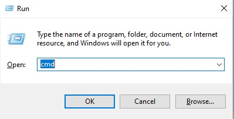
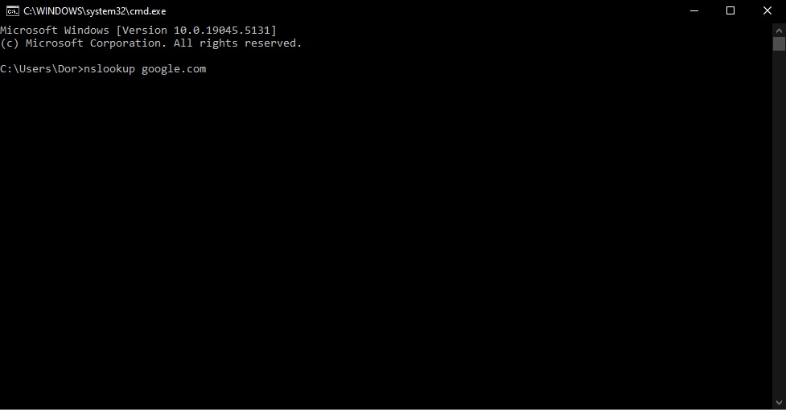
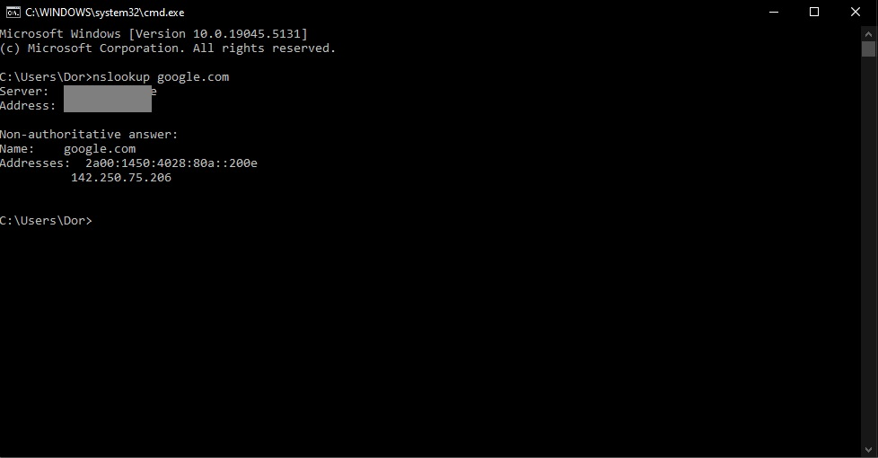

Alternatively, search for "Command Prompt" and open it.

nslookup url-we-want-to-check.com, for example, google.com


You will probably get another result (like the one I hid in the image above)
It might have an IP starting with 127.0.0
This is a local IP in your local network, passing on your request.